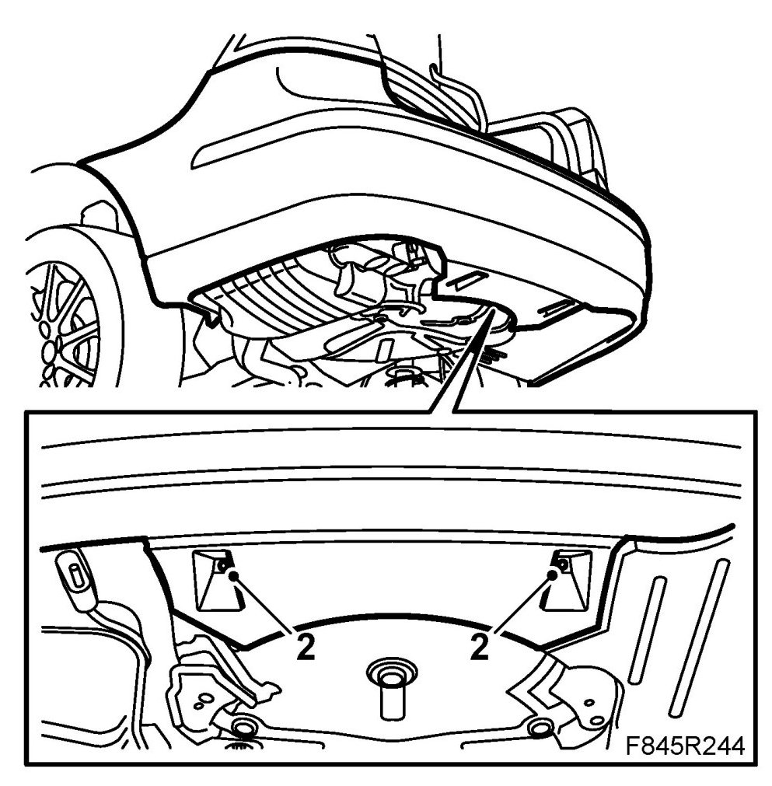
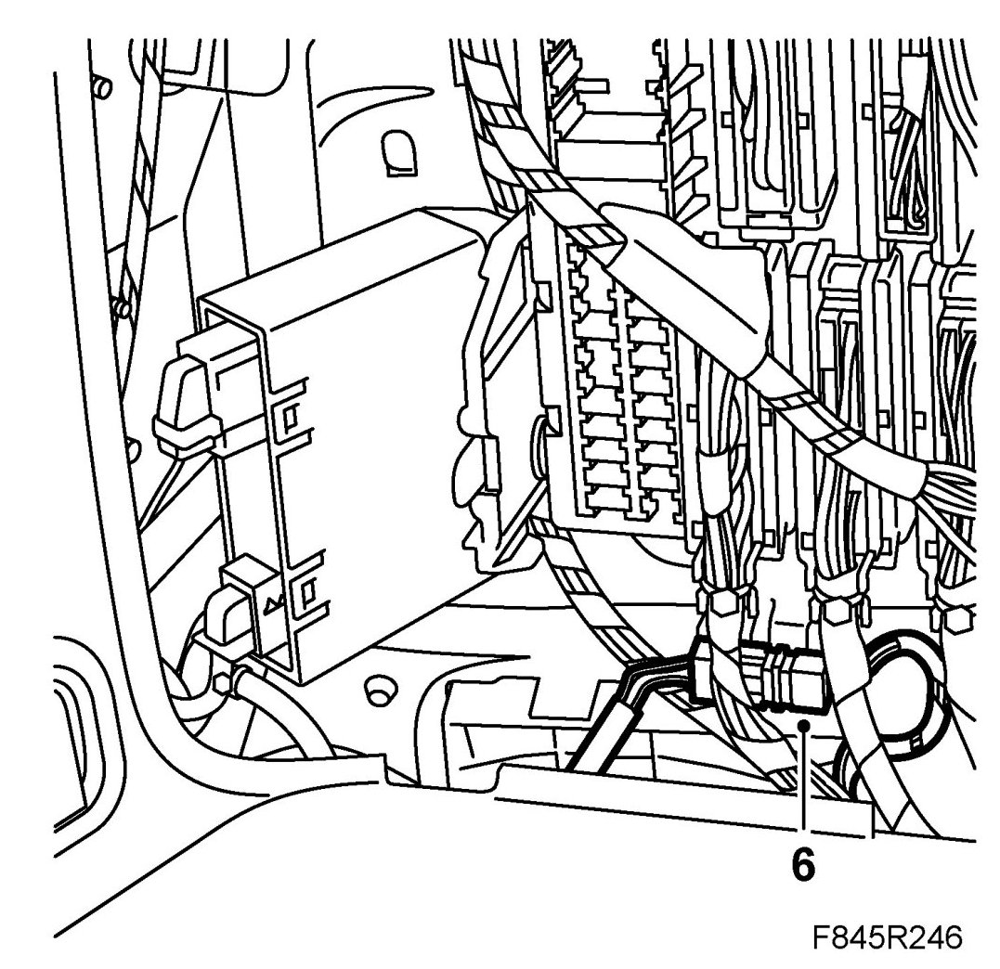
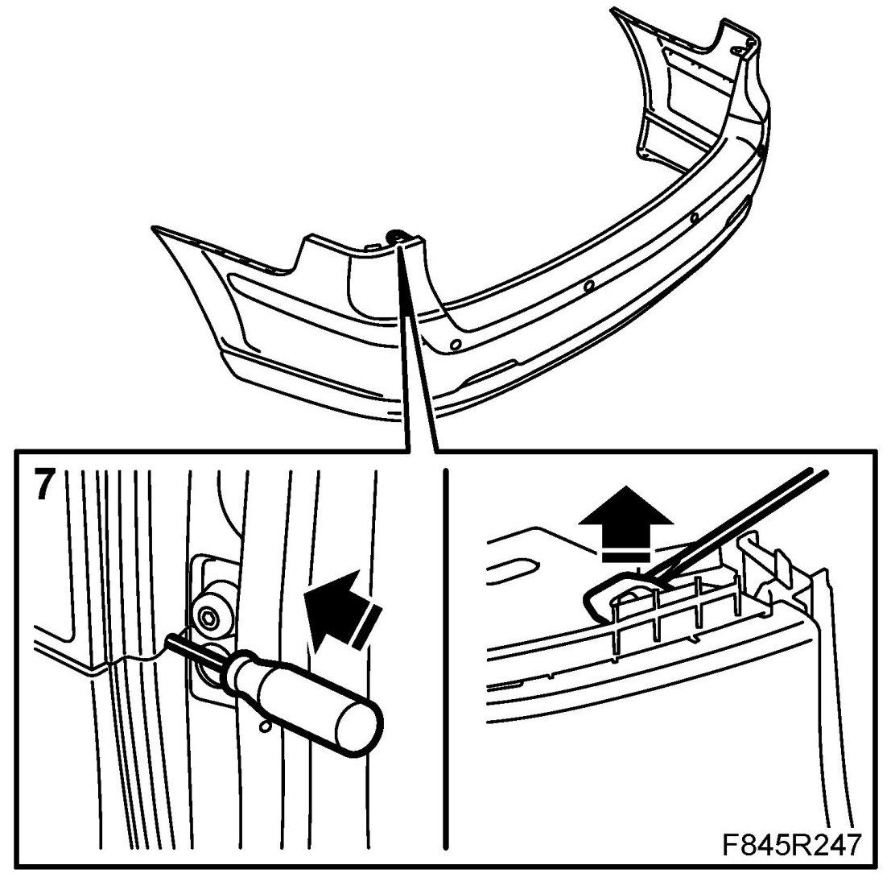
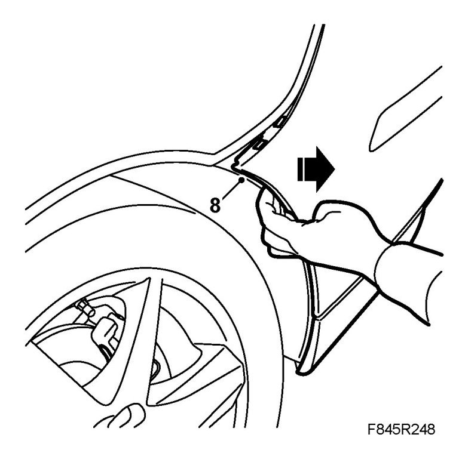
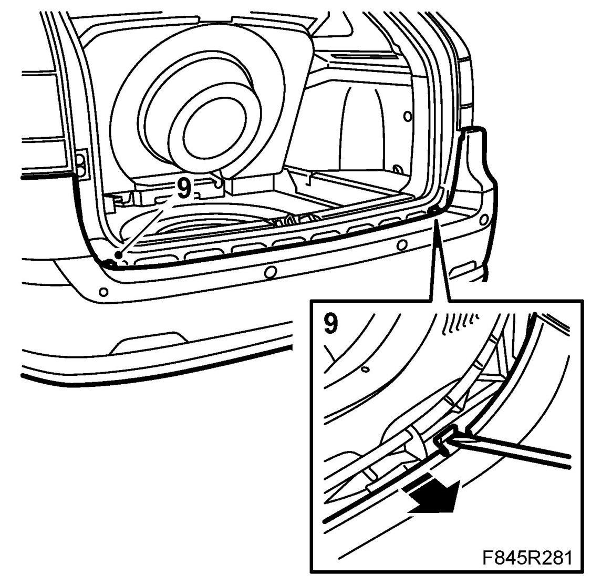
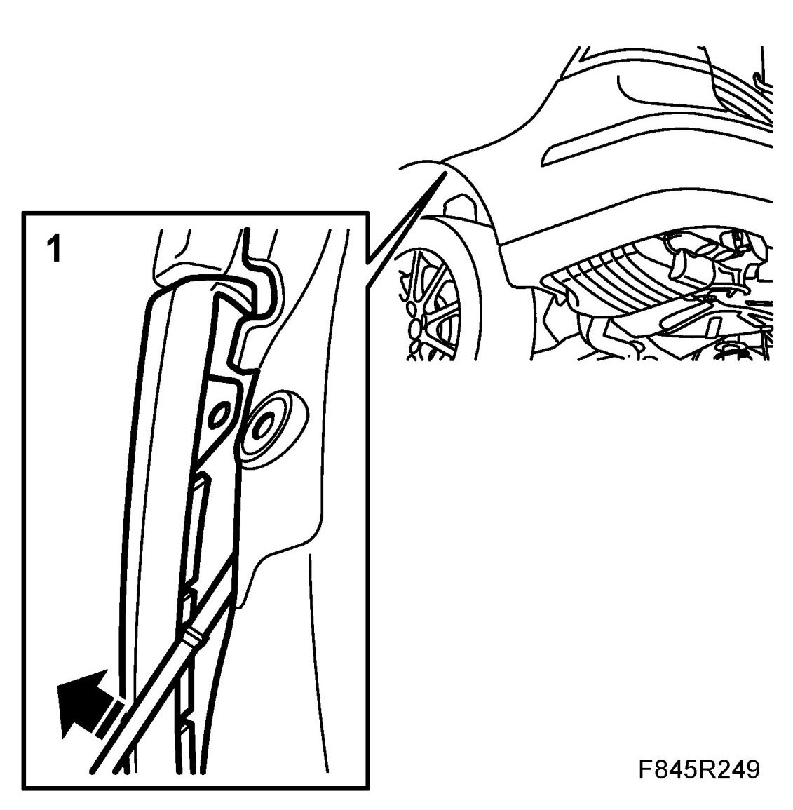
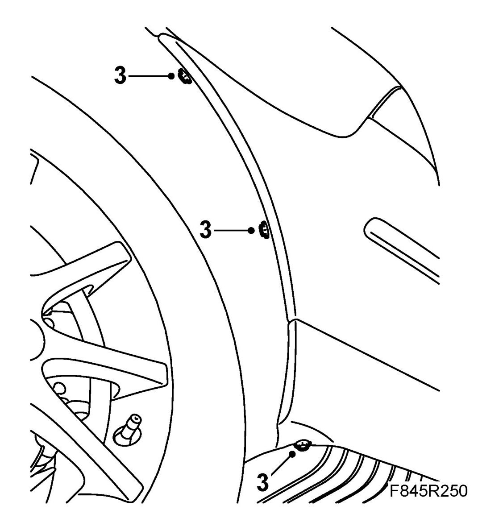
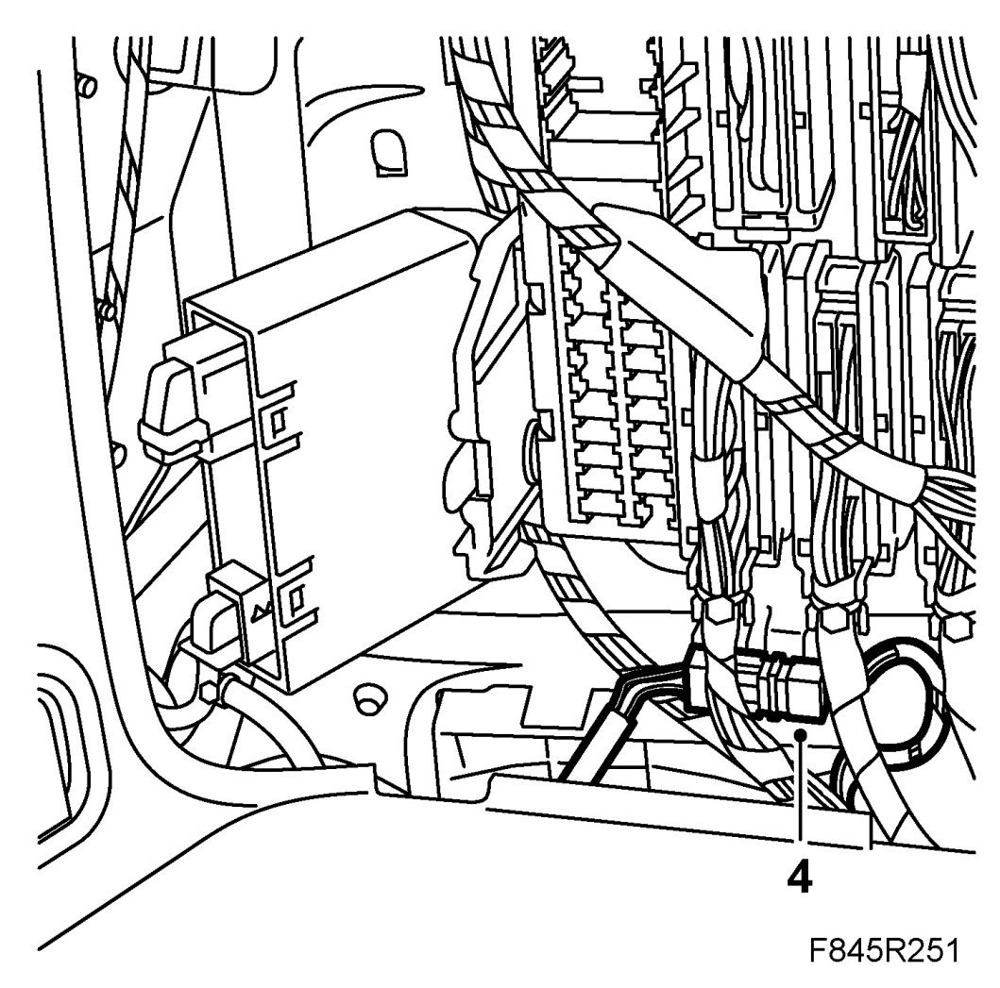
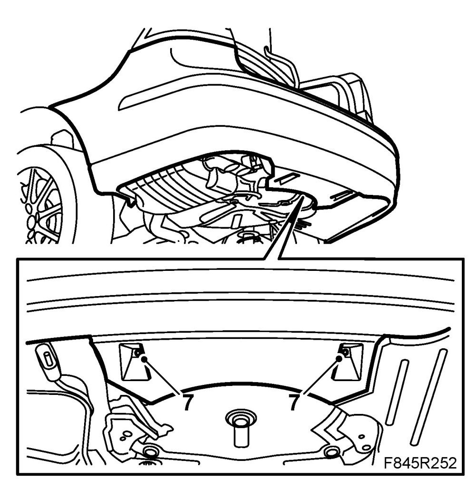

Bumper Shell, Rear, 5D
Bumper Shell, Rear, 5D
To remove
1. Raise the car.
2. Remove the middle spoiler nuts.

3. Remove the bolts in the wheel housing.
4. Lower the car and open the tailgate.
5. Open the side hatch.
6. Cars with SPA: Remove the connector.

7. Insert a screwdriver into the hole for access under the catch. Bend up with the screwdriver to release the catch.

8. Pull off the bumper shell from the holders.

9. Release the catches with a screwdriver. Detach the shell from the moulding.

10. Lift off the bumper shell.
To fit
1. Cars with SPA: Insert the wiring harness.
Lift up the bumper shell and guide the tabs under the holders.

2. Position the front corner of the bumper shell between the wing liner and the holder. Make sure the shell tongue lies between the wing liner and the bumper shell holder.
3. Fit the bolts in the wing liner.

4. Cars with SPA: Plug in the connector.

5. Close the side hatch and close the tailgate.
6. Raise the car.
7. Fit the middle spoiler nuts.

8. Lower the car and check the fit of the bumper shell.